-创建 STEP 7 项目
-插入所需的 SIMATIC S7-1200站
-在站中插入通信模块和其它所需模块
-添加PROFIBUS DP网络，分配DP 地址，定义操作模式和DP参数
-连接 DP 从站到主站
-组态其它模块
-项目保存并下载
以S7-1200和ET200S 为例，说明组态过程。
（1）S7-1200 通过CM1243-5 做DP主站
（2）创建DP主站系统
在网络视图右键单击 DP 主站模块CM1243-5的 DP 接口，通过操作“分配主站系统”来创建DP主站。
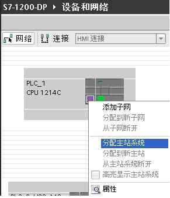
（3）组态从站
从硬件目录/ 分布式I/O 中将ET200S拖入网络视图，鼠标拖动从站通信接口到主站接口， 释放鼠标按钮，即可创建 PROFIBUS 连接。
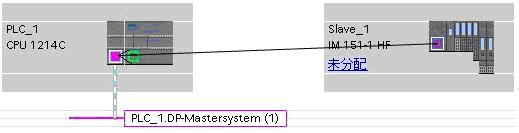
点击 ET200S 上 “未分配”，将从ET200S 分配给 CM1243-5 。显示如下图

鼠标右键点击网线可查看网络参数，在网络设置中可修改传输速率、最高站地址等。
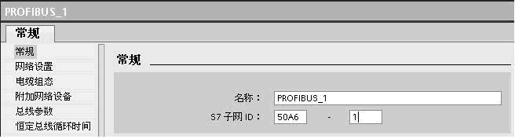

（4）双击ET200S组态从站其它模块
如图示分别插入电源模块PM-E，DO模块和DI模块。
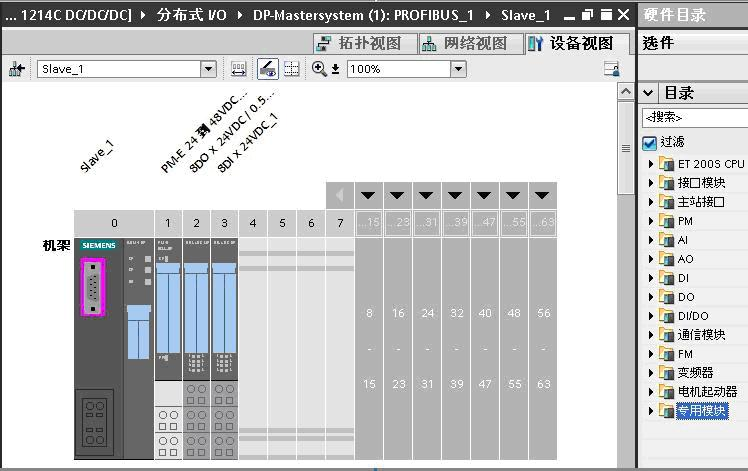
（5）编译存盘，下载到S7-1200 CPU
以2个 S7-1200 DP组态通信为例。
（1）PLC_1_DP_Master通过CM1243-5 做PROFIBUS DP主站，PLC_2_DP_Slave 通过CM1242-5做PROFIBUS DP从站。组态设备并创建DP主站网络

（2）从站连接到主站，将 PLC_2_DP_Slave 分配给 DP主站 CM1243-5
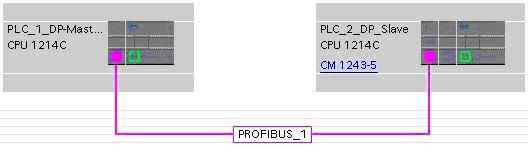
（3）双击PLC_2_DP_Slave，点击DP口通过属性组态数据传输区

传输区_1主站读取从站33个字，传输区_2主站发送10个字节到从站，按长度单位保持数据的一致性。“按长度单位”一致性数据的读取，不需要编写通讯程序。

比如传输区_1，主站将从站QW100 开始的33个字，读取到从IW104 开始的地址里。
编译，存盘，下载程序到各自的CPU。
通过监控表可以看到数据的对应关系。
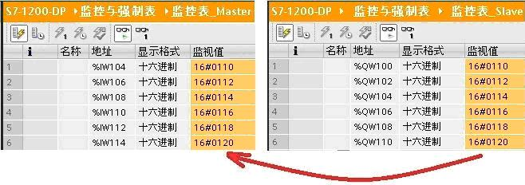
对于智能从站的I/O模块：
DP 主站无法直接读写智能从站的I/O模块，要通过智能从站CPU编写程序，将I/O模块和DP传输区进行数据交换来实现。
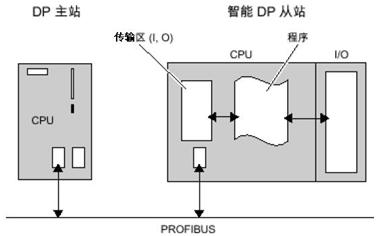
假如主站要读取从站CPU集成输入点IW0，则从站主循环程序OB1需要插入一段MOVE程序，如下图，通过MOVE指令将IW0传送到QW120 。使用上边的组态，从站数据QW120通过传输区_1到达主站的IW124。
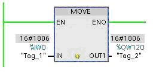
通过下图的监控表可以看到，主站在IW124读到了从站CPU的集成点IW0。

当DP从站为第三方设备，或在 STEP7 V11 硬件列表中找不到的西门子设备，可通过安装GSD 文件将该设备添加到STEP7 V11 ，这样该设备就被添加到系统中。
设备的GSD文件，由设备供应商提供。
下面以S7-1200 通过CM1243-5 做主站，S7-200 通过EM277 做从站，介绍组态过程：
（1）在STEP7 V11安装EM277 GSD文件
安装GSD 文件前，要关闭硬件和网络编辑器,在“选项”(Options) 菜单中，选择命令“安装设备描述文件”。
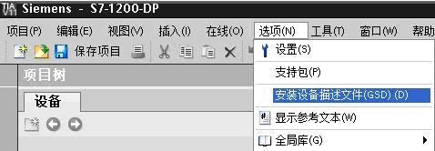
从“源路径”选择要安装 GSD 文件的文件夹，从所显示 GSD 文件的列表中选择要安装的文件，单击“安装” (Install) 按钮。
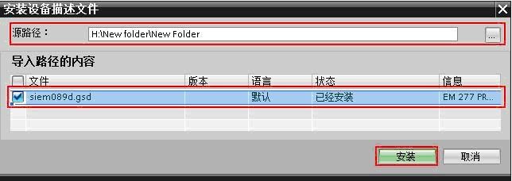
重启STEP7后，在硬件目录中“其它现场设备”文件夹下，就可以找到通过 GSD 文件安装的 DP 从站。

（2）将EM277 拖放到网络视图，并连接到主站模块CM1243-5

（3）双击EM277 ，在属性中查看PROFIBUS DP参数，EM277 DP地址为4 ，V区地址偏移量是0

（4）组态通信数据
EM277 设备概览中只有一个可组态的槽位，根据通信数据的要求，可选择固定报文或通用模块，本例选择通用模块，定义了与主站的数据交换为10字节输入，10字节输出，一致性选择“按长度单位”。
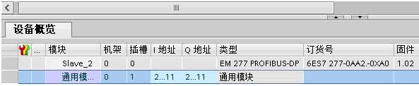
（5）编译检查组态，下载到 S7-1200 CPU 。
（6）将EM277 地址拨码开关拨到4，启动PLC。
通过 S7-1200 的监控表和S7-200的状态表查看通信数据。

当DP主站和DP从站不在同一项目时，DP通信组态要在各自的项目中完成。如下例子CPU315-2PN/DP做DP主站，CPU1214C 和CM1242-5 做DP智能从站，CPU315-2PN/DP在STEP7 V5.5完成组态，S7-1200 使用STEP7 V11 SP2 组态。
（1）在STEP7 V5.5 组态DP主站
a. 在STEP7 V5.5 安装CM1242-5 GSD文件
 CM1242-5 GSD 文件本地下载
CM1242-5 GSD 文件本地下载
STEP7 V5.5 硬件组态，Option/Install GSD File ，将CM1242-5 GSD文件安装到STEP7 V5.5 。
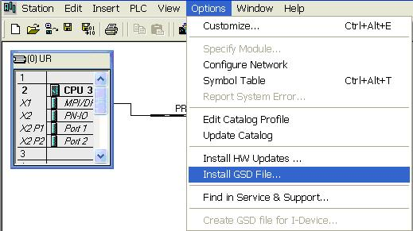
b. 组态主/从通信
将地址为3的DP从站模块CM1242-5 连接到CPU315-2PN/DP。槽1插入通用模块，2个字节的输入；槽2插入通用模块，2个字节的输出。

c. 下载DP主站组态
如上组态编译检查，若没有错误，存盘并下载到CPU315-2PN/DP。
（2）在STEP7 V11组态DP从站
a.在STEP7 V11组态S7-1200
在STEP7 V11项目视图添加PLC站S7-1200，以及CM1242-5模块。CM1242-5模块的DP网口添加新网PROFIBUS_1，DP地址定义为3，与STEP7 V5.5 相同。由于主站不在同一个项目中，S7-1200的主站分配状态为“未分配”。
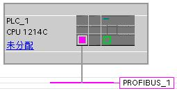
b. 组态通信传输区
选择模块CM1242-5上的 DP口属性，添加与主站通信的数据传输区。1槽插入2个字节的输出，2槽插入2个字节的输入，与主站通信组态的槽交叉对应

c.下载到 S7-1200 的CPU
选择 S7-1200 PLC 站，编译，若没有错误，将组态下载到 CPU 1214C。
（3）查看通信状态
通过STEP7 V5.5 的变量表，以及STEP7 V11 的监控表， 查看DP通信结果。